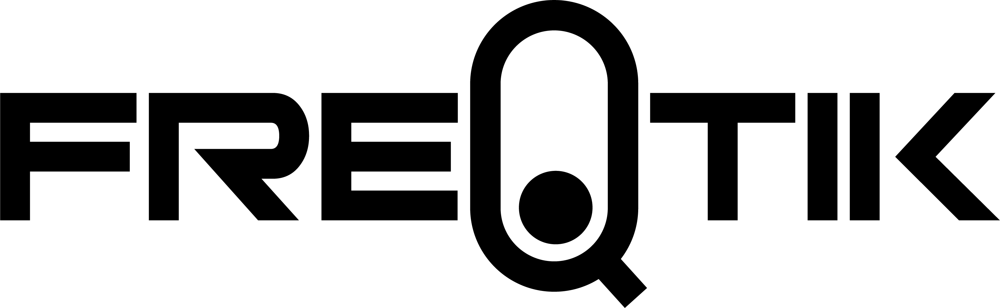

☰

create experiences & find solutions.
Audio Tools
Impulse (All)
Impulse Anvil (VST3)
Impulse Forge (Acoustic Editor)
Impulse Smith (Bundle)
Downloads
Connect
About & Projects
About FreQtik
Games · Learning to Bear
Games · Aim Trainer Bee Pro
Games · UFO Clicker
Music · YouTube
Music · Spotify